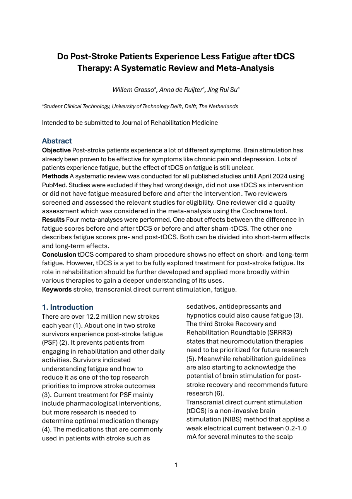

Transcranial direct current stimulation and post stroke fatigue
The full manuscript, including the search strategy, the inclusion criteria, the quality assessment and all four forest plots.
A systematic review and meta analysis asking a single question: do stroke patients experience less fatigue after treatment with transcranial direct current stimulation than after sham stimulation? Six studies, 211 patients, searched in PubMed up to April 2024.
Written with Anna de Ruijter and Jing Rui Su during the Clinical Technology bachelor at TU Delft, and prepared for submission to the Journal of Rehabilitation Medicine.
Post stroke fatigue affects roughly half of stroke survivors and limits what they can get out of rehabilitation and out of ordinary days. Neuromodulation has shown promise in other neurological conditions, which makes it an obvious thing to try here. Whether it actually works had not been settled.
A systematic search with predefined inclusion criteria: human stroke patients, use of transcranial direct current stimulation, fatigue measured before and after the intervention, and a controlled or clinical study design. Six studies survived screening.
Effects were pooled with a random effects model using standardised mean differences, evaluated both short term and long term, and both against sham stimulation and within groups before and after treatment.

The result reads as a warning about how easy it is to convince yourself. Compare patients before and after treatment and fatigue clearly improves. Compare them against patients who received sham stimulation and that improvement disappears. The improvement is real; attributing it to the stimulation is not supported.
Current evidence does not support a significant effect of transcranial direct current stimulation on post stroke fatigue when compared against sham stimulation. It remains a promising but insufficiently studied intervention, and deciding the question needs larger and better controlled trials.
The full manuscript is public, including the search strategy and quality assessment.
View on GitHub
The full manuscript, including the search strategy, the inclusion criteria, the quality assessment and all four forest plots.